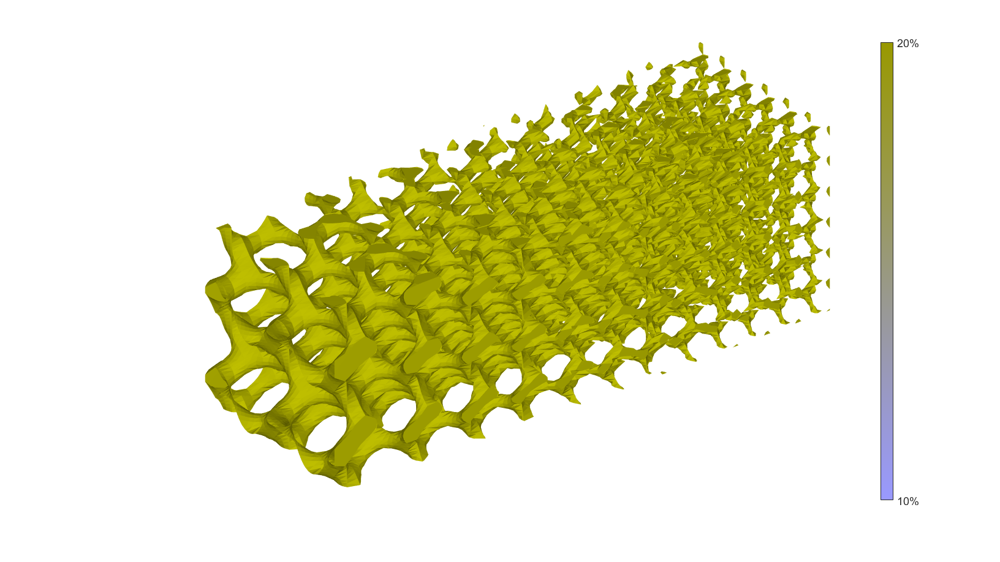
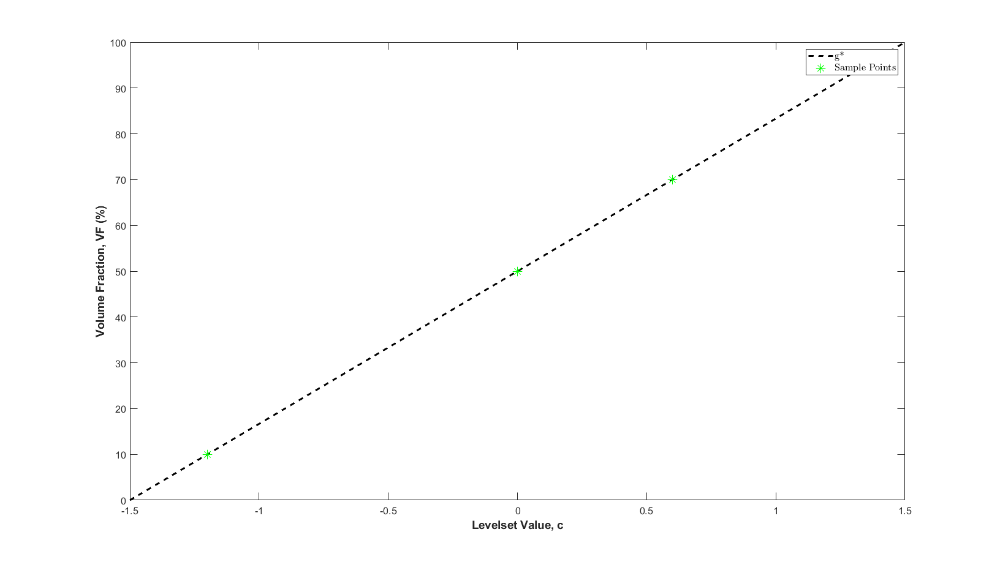

DEMO_0001_TPMS_Gradient_Samples
This is a demo for:
- Building geometry for
Contents
License: to license Author: Mahtab Vafaee, mahtab.vafaee@gmail.com
Change log: 2023/11/15 MV Created 2024/01/29 MV dfsfg
clear; close all; clc;
Plot settings
cMap=parula(250); faceAlpha1=1; faceAlpha2=0.5; edgeColor1='none'; edgeColor2='none'; fontSize=15;
Example 1: A closed Sheet-Network surface
Creating control parameters depending on the type of demo the user wants to run
testCase = 2; switch testCase case 1 % PAPER, figure 1 inputStruct.L=[3 1 1]; % characteristic length inputStruct.Ns=200; % number of sampling points inputStruct.surfaceCase='g'; %Surface type inputStruct.numPeriods=[6 2 2]; %Number of periods in each direction [6 2 2] case 2 % inputStruct.L=[3 1 1]; % characteristic length inputStruct.Ns=50; % number of sampling points inputStruct.surfaceCase='g'; %Surface type inputStruct.numPeriods=[6 2 2]; %Number of periods in each direction [6 2 2] end levelset= 1; %Isosurface level (0 for cellSize) gradType= 'cellSize'; % choose between cellSize or levelSet
Create triply periodic minimal surface
%Get parameters from input structure L = inputStruct.L; % characteristic length Ns = inputStruct.Ns; % number of sampling points k = inputStruct.numPeriods; %Create coordinates xMin=0; xMax= 2*pi*k(1,1); yMin=0; yMax= 2*pi*k(1,2); zMin=0; zMax= 2*pi*k(1,3); xRange=linspace(xMin,xMax,Ns); yRange=linspace(yMin,yMax,Ns); zRange=linspace(zMin,zMax,Ns); [X,Y,Z]=meshgrid(xRange,yRange,zRange); switch gradType case 'cellSize' % Calculate gradient frequency m=3; K1= (m-1)/(xMax-xMin); C1= (xMin*K1)+1; C0= 0.5*K1*(xMin)^2; a = K1/2*X+C1+C0/X; b = K1*X+C1; c = K1*X+C1; %Calculate 3D image data S=(sin(a.*(X-1/4*pi)).*cos(b.*(Y-1/4*pi)))+(sin(b.*(Y-1/4*pi)).*cos(c.*(Z-1/4*pi)))+(cos(a.*(X-1/4*pi)).*sin(c.*(Z-1/4*pi))); S=reshape(S,size(X)); case 'levelSet' %Calculate 3D image data S=(sin(X).*cos(Y))+(sin(Y).*cos(Z))+(cos(X).*sin(Z)); S=reshape(S,size(X)); % levelset gradient GF=X; % Use x-dir for now GF=GF-min(GF(:)); % 0-... GF=GF./max(GF(:)); % 0-1 GF=GF*((1/0.3)-(1/1.2)); % 0-2.5 GF=GF + (1/1.2); % 0.8333-3.3333 S=S.*GF; % sv3(S); colormap warmcold; % caxis([0 1.2]) end
Scaling coordinates
switch length(L) case 1 X=((X./abs(xMax-xMin)).*L); Y=((Y./abs(yMax-yMin)).*L); Z=((Z./abs(zMax-zMin)).*L); case 3 X=((X./max(X(:))).*L(1,1)); Y=((Y./max(Y(:))).*L(1,2)); Z=((Z./max(Z(:))).*L(1,3)); end
isosurface
[F,V] = isosurface(X,Y,Z,S,levelset); C=zeros(size(F,1),1); [fc,vc]=isocaps(X,Y,Z,S,levelset, 'above'); nc=patchNormal(fc,vc); cc=zeros(size(fc,1),1); cc(nc(:,1)<-0.5)=1; cc(nc(:,1)>0.5)=2; cc(nc(:,2)<-0.5)=3; cc(nc(:,2)>0.5)=4; cc(nc(:,3)<-0.5)=5; cc(nc(:,3)>0.5)=6; %Join sets [f,v,c]=joinElementSets({F,fc},{V,vc},{C,cc}); [f,v]=mergeVertices(f,v); %Merge nodes %Check for unique faces [~,indUni,~]=unique(sort(f,2),'rows'); f=f(indUni,:); %Keep unique faces c=c(indUni); %Remove collapsed faces [f,logicKeep]=patchRemoveCollapsed(f); c=c(logicKeep); %Remove unused points [f,v]=patchCleanUnused(f,v); f=fliplr(f); %Invert faces
gradient color
[Vm] = patchCentre(f,v);
Visualize surface
cFigure; hold on; % gpatch(f,v,Vm(:,1),'none', 1); gpatch(f,v,[0.75, 0.75, 0],'none', 1); axis off; axisGeom; camlight headlight; map=[0.6*ones(256,2), linspace(1, 0, 256)']; % reduced sampling x0 = [0 0.008889 0.03556 0.08 0.1422 0.2222 0.32 0.4356 0.5644 0.68 0.7778 0.8578 0.92 0.9644 0.9911 1]; CT0 = [0 0 0.1; 0.002914 0.01103 0.1143; 0.01221 0.02996 0.1352; 0.02938 0.04745 0.1489; 0.05622 0.07057 0.1604; ... 0.09753 0.1003 0.1803; 0.1756 0.1568 0.2046; 0.2908 0.2456 0.2395; 0.4299 0.355 0.2906; 0.5757 0.4753 0.3516; ... 0.7288 0.6116 0.427; 0.8555 0.7448 0.5124; 0.9486 0.8541 0.6076; 0.9871 0.9329 0.7081; 0.9983 0.983 0.809; 1 1 0.95]; CT0 = flipud(CT0); % generate a new uniform table of desired length N = 256; xf = linspace(0,1,N); CT = interp1(x0,CT0,xf,'pchip'); cmap = colormap(map) ; %Create Colormap cbh = colorbar; %Create Colorbar cbh.Ticks = linspace(0, 3, 4); %Create 4 ticks 10%-40% cbh.TickLabelInterpreter = 'tex'; cbh.TickLabels = {'10%','20%','30%','40%'} ; %Replace the labels of these 8 ticks with the numbers 1 to 8 gdrawnow;
calculate volume fraction
volSurf=patchVolume(f,v,0) % solid volume VolTotal= L(1,1)*L(1,2)*L(1,3) % total volume VF=volSurf/VolTotal % volume fraction
volSurf =
0.3148
VolTotal =
3
VF =
0.1049
Plotting gyroid VF vs levelset
a = 1/3; b = 0.5; x = linspace(-1.5, 1.5, 101); y = (a*x + b)*100; % c=[-0.6, 0, 1.2]; % VF=[10, 50, 70]; % V(1,:)= c; % V(2,:)= VF; cFigure; plot (x, y, 'k--', 'LineWidth',2.2); hold on; plot(x(11),y(11),'g*', 'MarkerSize',11); plot(x(51),y(51),'g*', 'MarkerSize',11); plot(x(71),y(71),'g*', 'MarkerSize',11); ax = gca; ax.FontSize = 12; yticks= linspace (0, 100, 11); xlabel('Levelset Value, c', 'FontSize',14, 'FontWeight','bold', 'FontSmoothing','on'); ylabel('Volume Fraction, VF (%)', 'FontSize',14, 'FontWeight','bold', 'FontSmoothing','on'); set(legend,'FontSize',12); legend( 'k--', 'VF = 1/3 c + 1/2 ' , 'Interpreter','latex') legend('g*', 'Sample Points') % set(legend,'Interpreter','latex');